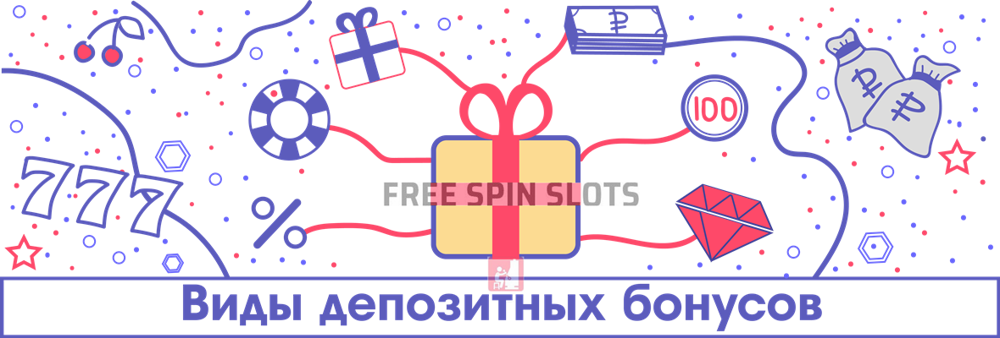

Лучшие депозитные бонусы в онлайн казино
Одним из наиболее распространенных акционных инструментов в онлайн казино являются депозитные бонусы. Игорные заведения наперегонки соревнуются, кто предложит лучше условия, чтобы привлечь как можно большую аудиторию. Оно и понятно, ведь речь идет о высококонкурентной сфере бизнеса. Впрочем, для игроков здесь имеется несомненный плюс – количество депозитных бонусов позволяет выбирать из множества вариантов, что обеспечивает разнообразие и интерес. В этом обзоре мы максимально подробно разберем все нюансы, касающиеся депозитных бонусов в казино.
| Казино | Размер | Промокод | Описание | ||
|---|---|---|---|---|---|
| 175% до 25 000 рублей+ 50 фриспиноввейджер: x40 | Приветственный бонус до 25 000 рублей + 50 фриспинов. Бонус доступен для новых игроков на первые два депозита. При первом пополнении от 500 рублей, казино предоставляет бонус 100% и 20 фриспинов в слоте Hotline. На второй депозит от 500 рублей - 75% и 30 фриспинов в игре Elven Pricesses. Бонус необходимо активировать в профиле перед пополнением. Максимальная сумма бонуса на первый депозит составляет 15 000 рублей, на второй - 10 000 рублей | Получить | |||
| Приветственный бонус до 25 000 рублей + 50 фриспинов. Бонус доступен для новых игроков на первые два депозита. При первом пополнении от 500 рублей, казино предоставляет бонус 100% и 20 фриспинов в слоте Hotline. На второй депозит от 500 рублей - 75% и 30 фриспинов в игре Elven Pricesses. Бонус необходимо активировать в профиле перед пополнением. Максимальная сумма бонуса на первый депозит составляет 15 000 рублей, на второй - 10 000 рублей | |||||
| 100% на первый депозитмакс. вывод 10 000 рублейвейджер: x49 | Приветственный бонус на депозит от 100 рублей. Подарок доступен для активации в течение 2 часов после депозита | Получить | |||
| Приветственный бонус на депозит от 100 рублей. Подарок доступен для активации в течение 2 часов после депозита | |||||
| 100% на первый депозитмакс. бонус 6000 рублейвейджер: x40 | Бонус начисляется за депозиты от 500 рублей и выше, формула отыгрыша (бонус+депозит) *40 | Получить | |||
| Бонус начисляется за депозиты от 500 рублей и выше, формула отыгрыша (бонус+депозит) *40 | |||||
Начнем с определения.
Что такое депозитный бонус?
Это поощрение, выдаваемое за внесение денег на счет. По своей форме, бывает два основных вида такого рода акций:
- кэш-бонус
- фриспины
Первые – это дополнительные деньги, зачисляемые на счет игрока. К примеру, очень часто казино дают бонус на первый депозит, а также на последующие пополнения баланса. Вы, наверное, видели подобного рода рекламу – 100% на первое внесение денег до 10 000 рублей. Что это значит? Согласно указанному размеру, ваш депозит будет удвоен (увеличен на 100%), а максимальная сумма промо-предложения – 10 000 рублей. Таким образом, совершив транзакцию в 5000 рублей с бонусом, в итоге вы получите на свой счет 10 000 рублей.
Теперь поговорим про фриспины. Это еще один вид депозитного поощрения, представляющий собой бесплатные вращения в одном или нескольких игровых автоматах. Заведение может самостоятельно выбрать слот, в котором их можно использовать, либо игроку может быть предоставлена свобода действий, что встречается гораздо реже. Казино само определяет количество фриспинов и ставку за спин.
Обратите внимание, что существует одно важное условие – вейджер или отыгрыш. Оно введено для того, чтобы люди не могли просто получить бонус и сразу же вывести деньги. Существует так называемое требование к ставкам – количество раз, которое нужно поставить сумму бонуса. Это ключевое понятие в любом депозитном бонусе, а потому разберем его сразу подробнее.
Итак, вы получаете кэш-бонус 100% до 12 000 рублей. Вы внесли на счет 6 000 рублей и получили на баланс 12 000 рублей, например, с вейджером х40. Теперь нужно узнать, на что распространяется отыгрыш – только на сумму бонуса (6 000 рублей) или на бонус+депозит (12 000 рублей). Их еще обозначают формулой Б или Б+Д. Если первый вариант, то вам нужно будет сделать ставок на 240 000 рублей, если второй – на 480 000 рублей. Может показаться, что это слишком много, но на самом деле, бонусы очень часто отыгрываются и люди выводят крупные суммы денег. Отыгрыш вейджера также называют «отмыванием», «откруткой» и так далее.
Если говорить про фриспины, то здесь подход несколько другой. Вейджер распространяется только на сумму выигрыша с бесплатных вращений. Объясним на примере. Вы внесли депозит и получили 30 фриспинов в слоте Immortal Romance с вейджером х40. После того, как вы открутили вращения, у вас на балансе оказалось 3200 рублей. Именно на эту сумму и будет распространяться вейджер. Теперь вам нужно сделать ставок на 128 000 рублей, после чего весь выигрыш можно будет поставить на вывод.
Теперь, когда мы разобрались с основами, можно посмотреть, каковы способы активации промо.
Как получить депозитный бонус в 2019 году?
Наиболее распространенный вариант – ввод промокода при внесении депозита. Сам код указывается либо на странице «Акции», либо в письме, если вам прислали на электронную почту специальное предложение. Практически нельзя встретить вариантов, когда бонус зачисляется автоматически, потому что не все предпочитают играть с поощрениями.
Итак, у вас есть промокод на депозитный бонус. Далее, вы заходите в раздел «Касса» или «Платежи», выбираете способ оплаты (карта, электронный кошелек), указываете сумму и вводите промокод в специальное поле. Если вы сомневаетесь в алгоритме своих действий, то мы советуем обратиться в службу поддержки вашего казино – в онлайн чат или по электронной почте за разъяснениями.
Достаточно редко встречаются случаи, когда получить бонус можно, обратившись именно в саппорт. Но чаще всего это связано с некими техническими неполадками на сайте. Теперь, когда вы поняли механизм получения депозитного бонуса, давайте с вами разберем типы поощрений.
Депозитный бонус – виды
Можно выделить шесть основных видов депозитных бонусов в онлайн казино:
- Приветственный
- Регулярный
- Акционный
- Ранговый
- Эксклюзивный
- Персональный

Приветственный депозитный бонус предлагается всем новым игрокам в казино. Очень часто он представляет собой целый пакет из трех-пяти поощрений на первые депозиты. Вы, возможно, встречали такие промо, когда игорное заведение приглашает попробовать их бонусы до 200 000 рублей и 500 фриспинов. Естественно, что вам не выдадут все сразу, а поделят их на примерно равные части. В качестве иллюстрации:
- 100% до 20 000 рублей на первый депозит
- 150% до 30 000 рублей на второе пополнение
- 200% до 20 000 рублей на третье внесение денег
- 150% до 60 000 рублей на четвертое
- А на пятый депозит – 100% до 70 000 рублей
То же самое касается и фриспинов. Иногда, впрочем, бесплатные вращения действительно предлагаются «пачкой» на депозит (например, 100 штук). Но опять-таки их не выдадут все сразу, а будут начислять по 20 спинов в день.
Регулярный депозитный бонус – это так называемые «релоады», «перезарядки» или «перезагрузки». Они позволяют периодически увеличивать ваш банкролл дополнительными деньгами. Некоторые казино предлагают их ежедневно, другие – пару раз в неделю; одни клубы делают их более крупными, чем приветственные бонусы, другие – наоборот.
Акционные депозитные бонусы выступают в качестве стимулов для пользователей к игре во время праздников или других событий. В качестве примеров – поощрения на 8 марта, Новый Год, День рождения казино или во время чемпионата мира по футболу. Такие промо часто сопровождаются красочными тематическими названиями и сюжетами.
Ранговые депозитные бонусы – это награды за продвижение в программе лояльности. Они могут быть очень крупными, особенно на ТОП уровнях. Продвижение практически всегда зависит от количества депозитов игрока и размера его ставок. Одни заведения превращают свою программу лояльности в увлекательное путешествие с интерактивной картой, другие просто показывают таблицу со статусами. К этому же виду мы относим предложения для игроков, участвующих в VIP-схеме казино. Проще говоря, эти бонусы являются привилегией для наиболее активных пользователей.
Эксклюзивный депозитный бонус предоставляется игрокам, совершившим определенное действие. Например, скачал приложение для мобильного устройства, установил на ПК программу-клиент, подписался на группу или канал в социальных сетях и так далее. Получить доступ к этим поощрениям может лишь ограниченный круг лиц.
Бездепозитный бонус, который начисляется на особенных условиях после достижения минимальных требования по бонусу. К примеру вам начисляется бездепозит если сумма ваших депозитов достигла 5000 рублей, или вы в течении недели были в проигрыше.
Наконец, персональные депозитные бонусы. В основном, они используются для стимулирования и возврата пользователей. Например, заведение может рассылать по электронной почте специальные предложения игрокам, которые совершили за все время депозитов на суммы не менее 10 000 рублей. Другой вариант – спонтанные акции для хайроллеров и постоянных клиентов, оповещения о которых приходят персонально, их нет в общем доступе.
Правила депозитных бонусов
Выше мы уже обсуждали вейджер, являющийся ключевым понятием в любой бонусной системе. Однако, промо имеют и другие условия, соблюдение которых обязательно. Нарушение каждого из этих правил может привести к конфискации части или всего выигрыша, а также к аннулированию бонуса и даже блокировке аккаунта:
- Одна учетная запись.
- Максимальная ставка.
- Ограничения по странам.
- Время на отыгрыш.
- Исключенные игры и контрибуция.
- Минимальный депозит.
- Лимит на вывод.
Начнем с главного правила в любом казино – у домохозяйства, одного IP и компьютера может быть только одна учетная запись в одном игорном заведении. Таким образом, если у вас дома есть ноутбук и вы зарегистрируете с него два аккаунта (для себя и для супруги, например), то пересечение рано или поздно будет выявлено. Это называется мультиаккаунт, и вы получите блокировку на все учетные записи.
При активном бонусе практически всегда есть ограничение по ставке. Оно указывается в общих правилах казино или в условиях определенного промо. Например, максимальная ставка зафиксирована на уровне 200 рублей за спин. А вы решили играть по 300 рублей. Есть два варианта исхода – либо вы просто не сможете сделать спин, так как система автоматически не даст сделать этого, либо вы сможете играть, но потом у вас конфискуют часть или весь выигрыш. Будьте внимательны!
Очень часто депозитные бонусы имеют ограничения по странам. Бывает так, что казино принимает игроков из вашей страны, но не предоставляет им бонусы. Если вы используете VPN, чтобы скрыть страну своего пребывания, то это закончится снова конфискацией выигрыша с бонуса и даже блокировкой аккаунта. Интересно, что различные юрисдикции подходят к этому вопросу по разному. К примеру, игроки из Швеции часто не могут использовать бонусы (особенно, если они предоставлены провайдером NetEnt), но просто играть имеют право; заведения с лицензией Кюрасао не могут принимать пользователей из самого Кюрасао, а британские игроки могут насладиться азартными играми только в клубах, имеющих разрешение Игорной комиссии Великобритании. Очень часто можно встретить ограничения для игроков из США, России, Украины, Нидерландов и ряда других стран.
Почти каждый депозитный бонус на реальные деньги имеет ограничение по времени на отыгрыш. Это может быть 7, 14 или 30 дней. Это означает, что вы должны отыграть вейджер именно в пределах этого временного промежутка. Не успели – бонус будет аннулирован. Кстати, есть время и на активацию поощрения – не затягивайте, иначе предлагаемый бонус может просто исчезнуть из-за истечения срока.
Очень часто исключенные игры и контрибуция становятся настоящей «ловушкой» для игроков. Сидите вы себе такие, играете руку за рукой в блэкджек, и думаете, что вейджер откручивается. Но может быть так, что именно блэкджек приносит вам 0% в отыгрыш. Количественный показатель, обозначающий процент от ставки, идущий в зачет вейджера, и есть контрибуция игры. Поясним. Такой расклад – в слотах – 100%, в настольных играх – 25%. Это значит, что, совершая спин со ставкой 100 рублей в игровой автомате, вы получаете зачет в отыгрыш в 100 рублей, а при раздаче в блэкджек в 100 рублей, в зачет идет 25 рублей. Кроме того, некоторые игры, например Live или ряд слотов, могут быть вообще запрещены при активном бонусе. Вы либо не сможете их запустить, либо казино даст вам в них поиграть, а потом конфискует выигрыш.
Если вы хотите играть с депозитным бонусом, то должны выполнить требование к минимальному пополнению счета. Это наименьший депозит, на который начисляется бонус. Обычно эта информация указывается в правилах к бонусу на видном месте. Так, поощрение можно активировать при внесении на баланс 1000 рублей или от 5000 рублей – смотрите правила того или иного промо.
Наконец, почти всегда есть ограничение на максимальный кэшаут при бонусе. Если вы выиграли 3 миллиона с бонусом, а вывести можно только 500 000 рублей, то остальные деньги у вас, к сожалению, изымут. Однако, есть и хорошие новости. Это правило не относится к глобальным джекпотам, вроде Mega Moolah, выигрыши в которых выплачивают провайдеры (в случае с указанным слотом – Microgaming), а не казино. Впрочем, автоматы с прогрессивными джекпотами обычно помещают в исключенные игры.
Депозитный бонус – как вывести деньги?
Итак, вам удалось отыграть вейджер, и теперь вы хотите вывести выигрыш на свою банковскую карту или электронный кошелек. Как это сделать? Очень просто, ведь процесс никак не отличается от стандартного пополнения, за исключением того, что вам не нужно вводить промокод и заходить надо в раздел «Выплаты», а не «Депозит».
Заходите в «Кассу», выбираете «Вывести» или «Кэшаут», указываете удобный для вас платежный метод, а затем вводите сумму. Скорость обработки заявки зависит от нескольких факторов, главные из которых: необходимость верификации и платежный метод. Начнем со второго. Как вы знаете, выводить деньги из казино можно несколькими способами:
- Банковские карты Visa, Maestro, MasterCard, МИР
- Qiwi
- Webmoney
- Skrill
- ecoPayz
- ЯндексДеньги
- На счет в банке
Электронные кошельки обладают самой высокой скоростью – вывод производится обычно в течение 24 часов. А вот на карты кэшаут может потребовать от 3 до 5 рабочих дней, на банковский счет – до 7 суток, а чеки могут идти вообще 2 недели, но последний вариант распространен только на Западе.
Также, большое значение имеет, прошли ли вы верификацию в казино или нет. Это процедура позволяет подтвердить вашу личность, пресечь мошенничество и отмывание денег, полученных преступным путем. Процесс полностью соответствует международным нормам гэмблинга. Вам необходимо будет предоставить службе поддержки казино фото или сканированные копии своего паспорта, водительского удостоверения, счета за услуги ЖКХ, договора на мобильную связь, выписки из банка, двух сторон банковской карты или скриншот личного кабинета электронного кошелька. Иногда может потребоваться селфи с паспортом и даже общение с менеджером казино по Skype. Все это вопрос безопасности.
Если вы беспокоитесь за свои личные данные, то учитывайте, что в любом казино имеется своя Политика конфиденциальности, подразумевающая неразглашение сведений. Кроме того, вся информация надежно защищена протоколами шифрования, а потому к ней не могут получить доступ никакие третьи лица.
Как выбрать хорошее казино с депозитным бонусом?
Если вы хотите играть с депозитным бонусом в 2019 году без разочарований, то обращайте внимание на следующие параметры:
- Условия и правила поощрений.
- Лицензия.
- Ассортимент игр.
- Скорость платежей.
- Работа службы поддержки.
Выше мы уже рассказали про основные правила бонусов в онлайн казино. Важно, чтобы они не были «грабительскими» и заведомо невыполнимыми. Следует обратить внимание на размер вейджера, исключенные игры, сроки отыгрыша и прочие нюансы. Если казино предлагает вам бонус с требованиями к ставкам х100, то отыграть его будет нереально.
Каждое игорное заведение должно иметь разрешение на организацию азартных игр в сети интернет. Российских игроков принимают клубы, работающие под юрисдикцией Кюрасао и Мальты. В казино, имеющих в качестве регулятора комиссии Гибралтара, Великобритании, Канаваке, Олдерни могут накладывать ограничения для россиян.
Обязательно просмотрите каталог казино. Если вы получили депозитный бонус, а отыгрывать его можно только в пяти автоматах от BetSoft, то радости это, скорее всего, почти не вызовет. Проверьте, чтобы клуб имел разнообразный ассортимент, как по количеству игр и их видам, так и по провайдерам.
Скорость платежей – еще один важный показатель. Чем быстрее вы получите свои деньги, тем ниже вероятность, что вам захочется рискнуть – а это нередко приводит к потере выигрыша. В приоритете – казино с моментальными выплатами.
Работа службы поддержки. Проверьте, как быстро откликаются сотрудники саппорта на ваше обращение. Насколько они лояльны, компетентны и вежливы? Это не праздный вопрос – проблемы могут возникнуть в любой момент, а оперативность и качество их решения могут иметь огромное значение.
В вопросе выбора казино с депозитным бонусом можно пойти двумя путями. Первый – это самостоятельная проверка каждого казино, анализ и сравнение их параметров. С учетом того, что на рынке работают сотни игорных клубов, это может занять у вас очень много времени, не говоря уже про возможные финансовые потери, если вы нарветесь на мошеннические ресурсы. Второй способ – посмотреть наш рейтинг депозитных бонусов, где уже отобраны заведения, соответствующие самым высоким стандартам в сфере гэмблинга. Эту работу провели эксперты высшего класса, самостоятельно протестировавшие каждое предложение.
FAQ по депозитным бонусам
У игроков часто возникают вопросы по депозитным бонусам, на которые мы постараемся полно ответить.
Преимущества и недостатки депозитного бонуса
Среди главных достоинств поощрений за депозиты:
- Вы можете существенно увеличить свой банкролл.
- Возможность попробовать более крупные ставки и продлить сессию.
- Ознакомление с большим количеством игр.
- Более высокий шанс отыграть вейджер, чем у бездепов.
Недостатки таких промо-предложений:
- Множество сопроводительных ограничений.
- Нельзя вносить деньги на счет и выводить выигрыши до отыгрыша вейджера.
- Необходимость прохождения верификации при заказе выплаты.
- Часто можно использовать только в слотах.
В любом случае, депозитные бонусы являются отличным шансом существенно увеличить ваш банкролл и провести время в казино весело.